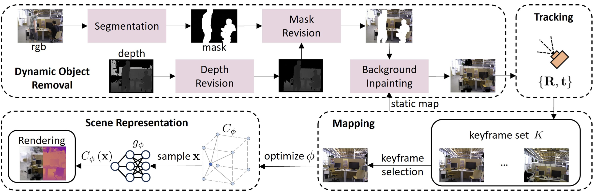
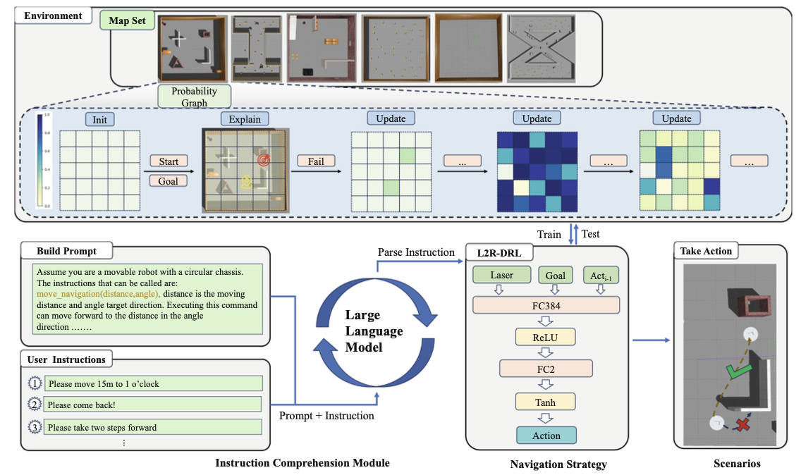
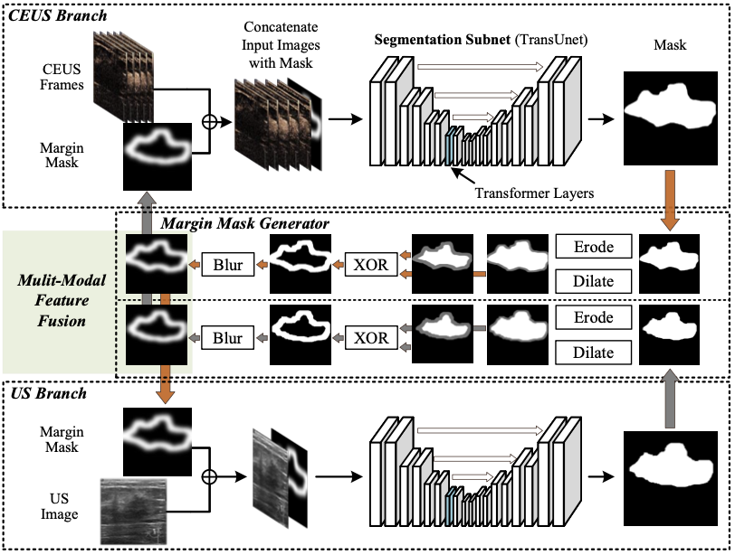
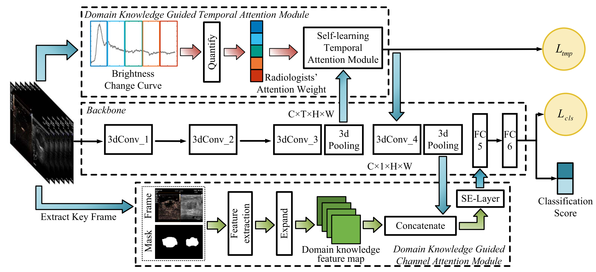

Chen Chen 陈晨
Senior Research Associate · Hangzhou Innovation Institute, Beihang University 高级副研究员 · 北京航空航天大学杭州创新研究院
I work on embodied AI and robotics — semantic object-goal navigation, SLAM and 3D reconstruction in dynamic environments, and LLM-powered robot systems. I received my M.Eng. in Computer Science from Beihang University (2022), advised by Prof. Jianwei Niu and Assoc. Prof. Xuefeng Liu, with a Master's thesis on medical image analysis (first-author paper in IEEE TMI), and my B.Eng. from Taiyuan University of Technology. 我的研究方向是具身智能与机器人：语义目标导航、动态环境下的 SLAM 与三维重建、大模型驱动的机器人系统。2022 年于北京航空航天大学获硕士学位（保研，导师：牛建伟教授、刘雪峰副教授），硕士课题为医学图像分析（一作论文发表于 IEEE TMI）；本科毕业于太原理工大学计算机科学与技术专业。
What I work on研究方向
Semantic Navigation语义目标导航
Zero-shot object-goal navigation with vision-language models: adaptive multi-cue frontier maps (KSEM'26), commonsense & memory-augmented object search (ICRA'26), 3D scene graph maintenance during task execution (ICRA'25), and LLM-enhanced navigation (L2R-Nav, KSEM'24). 2nd inventor on a granted patent for multi-cue semantic-matching goal navigation. 基于视觉-语言模型的零样本物体目标导航：多维线索自适应加权前沿地图（KSEM'26）、常识与记忆增强的物体搜索（ICRA'26）、任务执行中的三维场景图维护（ICRA'25）、LLM 增强导航框架（L2R-Nav，KSEM'24）。「多线索语义匹配的目标导航」授权发明专利第二发明人。
SLAM in Dynamic Scenes动态场景 SLAM 与重建
Making neural implicit and 3D Gaussian Splatting SLAM robust to moving people and objects: NID-SLAM (ICME'24), GLC-SLAM, DL-SLAM. Ongoing work on dynamic-object handling for feed-forward 3D reconstruction. 让神经隐式与 3D Gaussian Splatting SLAM 在有人员走动的动态环境中保持鲁棒：NID-SLAM（ICME'24）、GLC-SLAM、DL-SLAM。在研：面向前馈式三维重建的动态物体处理。
Robot Systems Engineering机器人系统工程
Built the perception–mapping–navigation stack of a self-developed composite robot (differential base + SCARA arm) on RK3588 within a ¥12M Zhejiang Key R&D project: EKF multi-sensor fusion, 2D-laser & RTAB-Map SLAM, PID fine docking (<2cm/<3°), vision-based grasp-pose generation, LLM task decomposition (>95% grasp success), and a self-developed web robot visualization console (rviz-like). Deployed in automated laboratories and outdoor inspection. Currently fine-tuning and deploying VLA policies (π0-family) on a self-developed dual-arm robot with edge deployment on NVIDIA AGX Orin/Thor. 在 1200 万浙江省重点研发项目中负责自研复合机器人（差速底盘 + SCARA 臂）的感知-建图-导航全栈（RK3588）：EKF 多传感器融合、2D 激光与 RTAB-Map SLAM、PID 精定位（<2cm/<3°）、基于视觉的抓取位姿生成、LLM 任务拆解抓取（>95%）、自研 Web 机器人可视化（类 rviz）。已落地自动化实验室与室外巡检。当前：在自研双臂机器人上微调与部署 π0 系 VLA 策略，并在 NVIDIA AGX Orin/Thor 上进行端侧部署。
Medical Image Analysis医学图像分析
Earlier line of work (2019–2023): multi-modal breast ultrasound analysis — domain-knowledge-guided CEUS video diagnosis (IEEE TMI 2021, first author, 150+ citations) and US+CEUS mutual-aid lesion segmentation (BIBM 2023, co-first author), with two granted patents on ultrasound classification and lesion detection. 早期方向（2019–2023）：多模态乳腺超声分析——融合放射科医生领域知识的 CEUS 视频良恶性诊断（IEEE TMI 2021 一作，引用 150+）、US+CEUS 互助病灶分割（BIBM 2023 共同一作）；配套超声图像分类与病灶检测授权发明专利 2 项。
Publications论文
Also on Google Scholar. * = co-first author, † = corresponding author. 完整列表见 Google Scholar。* 为共同一作，† 为通讯作者。
From Glance to Inspection: Frontier Maps from Adaptive Weighting of Multi-Dimensional Cues for Zero-Shot Object Navigation
KSEM · 2026
CMAR-search: Commonsense and Memory Augmented Reasoning for Object Search in Dynamic Interactive Environments
ICRA · 2026
SV-Plan: En-Route Task Planning Using Semantic Voronoi Graph
KSEM · 2026
SAC-SLAM: Building 3D Spatial Knowledge Bases via Surface-Aligned Consistent Mapping
KSEM · 2026
DL-SLAM: Enabling High-Fidelity Gaussian Splatting SLAM in Dynamic Environments via Dual-Level Probability
arXiv 2607.01860 · 2026
Interaction-Driven Updates: 3D Scene Graph Maintenance During Robot Task Execution
ICRA · 2025

NID-SLAM: Neural Implicit Representation-based RGB-D SLAM in Dynamic Environments
ICME · 2024

L2R-Nav: A Large Language Model-Enhanced Framework for Robotic Navigation
KSEM · 2024
GLC-SLAM: Gaussian Splatting SLAM with Efficient Loop Closure
arXiv 2409.10982 · 2024

IMAN: An Iterative Mutual-Aid Network for Breast Lesion Segmentation on Multi-modal Ultrasound Images
BIBM · 2023
DGANet: A Dual Global Attention Neural Network for Breast Lesion Detection in Ultrasound Images
Ultrasound in Medicine & Biology · 2023
Conventional Ultrasound and Contrast-Enhanced Ultrasound Radiomics in Breast Cancer and Molecular Subtype Diagnosis
Frontiers in Oncology · 2023
Anatomical Landmarks Annotation on 2D Lateral Cephalograms with Channel Attention
IEEE/ACM CCGRID · 2022

Domain Knowledge Powered Deep Learning for Breast Cancer Diagnosis Based on Contrast-Enhanced Ultrasound Videos
IEEE Transactions on Medical Imaging (TMI) · 2021 · 40(9): 2439–2451
Granted Invention Patents (CN)授权发明专利
-
Robot goal navigation via multi-cue semantic matching利用多线索语义匹配的机器人目标导航方法及相关装置
2nd inventor第二发明人
ZL 2024 1 1393485.5 · 2025-11 -
3D scene graph updating method and robot control device一种三维场景图更新方法及机器人控制设备
ZL 2024 1 1642619.2 · 2025-10 -
Iterative inverse-kinematics solving and motion control for manipulators一种机械臂逆运动学迭代求解方法和机械臂运动控制设备
ZL 2025 1 2001085.6 · 2026-04 -
Multi-mobile-robot scheduling method, device and storage medium一种多移动机器人调度方法、装置、存储介质及电子设备
ZL 2024 1 1412695.4 · 2025-02 -
Mobile robot data storage method and system一种移动机器人数据存储方法及系统
ZL 2024 1 0057582.0 · 2024-04 -
Ultrasound image classification with multi-branch attention一种基于多分支注意力机制的超声图像分类方法和装置
ZL 2020 1 1309889.3 · 2022-09 -
Lesion detection model training and lesion recognition in images病灶检测模型的训练方法及识别图像中的病灶的方法
ZL 2021 1 0916421.9 · 2021-11
Experience & Education工作与教育经历
-
2022.01 – present至今
Senior Research Associate高级副研究员 ·
Hangzhou Innovation Institute, Beihang University北京航空航天大学杭州创新研究院
Embodied AI & robot systems; Zhejiang Provincial Key R&D project (¥12M).具身智能与机器人系统研究；承担浙江省重点研发计划项目（经费 1200 万）。 -
2021.03 – 2021.05
Big Data Development Intern大数据开发实习生 ·
Ocean Engine, ByteDance字节跳动 · 巨量引擎
Risk-control data warehouse, commercial technology department.商业化技术部门，风控数仓建设。 -
2019.09 – 2022.01
M.Eng., Computer Science硕士 · 计算机技术 ·
Beihang University北京航空航天大学 计算机学院
Recommended admission; medical image analysis.保研；方向：医学图像分析。 -
2015.09 – 2019.06
B.Eng., Computer Science and Technology本科 · 计算机科学与技术 ·
Taiyuan University of Technology太原理工大学
Top 2% of major.专业前 2%。
Open Source开源贡献
- MindSpore — 28 commits merged to master: vision/audio data-processing operators (AdjustGamma, GriffinLim, MelScale, Vad, …) with IR layer, C++/Python interfaces and unit tests. 28 个 commit 合入主干：视觉/音频数据处理算子（AdjustGamma、GriffinLim、MelScale、Vad 等），含 IR 层、C++/Python 接口与单元测试。 Gitee
- Ascend ModelZoo — DEIT inference/training migration on Ascend 910/310 NPUs. DEIT 模型在昇腾 910/310 上的推理/训练迁移。 Gitee
Selected Awards主要奖项
- 2018 · China National Scholarship国家奖学金
- 2017 · President Scholarship, Taiyuan University of Technology太原理工大学校长奖学金
- 2017 · Meritorious Winner, Mathematical Contest in Modeling (MCM)美国大学生数学建模竞赛（MCM）Meritorious Winner